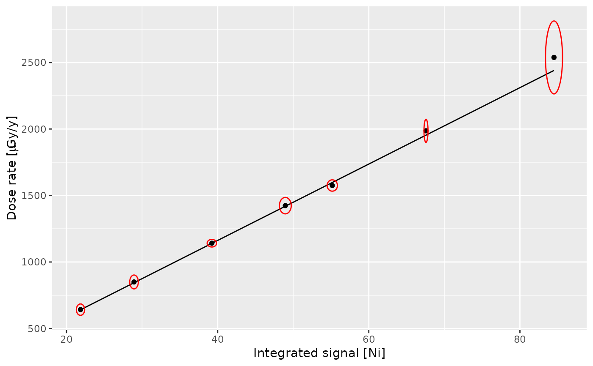

dose_fit()builds a calibration curve for gamma dose rate estimation.dose_predict()predicts in situ gamma dose rate.
Usage
dose_fit(object, background, doses, ...)
dose_predict(object, spectrum, ...)
# S4 method for class 'GammaSpectra,GammaSpectrumOrNumeric,matrix'
dose_fit(
object,
background,
doses,
range_Ni,
range_NiEi,
details = list(authors = "", date = Sys.time())
)
# S4 method for class 'GammaSpectra,GammaSpectrumOrNumeric,data.frame'
dose_fit(
object,
background,
doses,
range_Ni,
range_NiEi,
details = list(authors = "", date = Sys.time())
)
# S4 method for class 'CalibrationCurve,missing'
dose_predict(
object,
sigma = 1,
epsilon = 0.015,
water_content = NULL,
use_MC = FALSE
)
# S4 method for class 'CalibrationCurve,GammaSpectrum'
dose_predict(
object,
spectrum,
sigma = 1,
epsilon = 0.015,
water_content = NULL,
use_MC = FALSE
)
# S4 method for class 'CalibrationCurve,GammaSpectra'
dose_predict(
object,
spectrum,
sigma = 1,
epsilon = 0.015,
water_content = NULL,
use_MC = FALSE
)Arguments
- object
A GammaSpectra or CalibrationCurve object.
- background
A GammaSpectrum object or a length-two
numericvector giving the background noise integration value and error, respectively. If no background subtraction is wanted, you can setbackground = c(0,0,)- doses
A
matrixordata.frameobject with gamma dose values and uncertainties. The row names must match the names of the spectrum.- ...
Currently not used.
- spectrum
An optional GammaSpectrum or GammaSpectra object in which to look for variables with which to predict. If omitted, the fitted values are used.
- range_Ni, range_NiEi
A length-two
numericvector giving the energy range to integrate within (in keV).- details
A
listof length-one vector specifying additional informations about the instrument for which the curve is built.- sigma
A
numericvalue giving the confidence level of which the error from the slope is considered in the final uncertainty calculation- epsilon
A
numericvalue giving an extra relative error term, introduced by the calibration of the energy scale of the spectrum, e.g.,0.015for an additional 1.5% error- water_content
numericormatrixgravimetric field water content to correct the gamma-dose rate to using the correction factor by Aitken (1985) to obtain the dry gamma-dose rate. Example:c(0.05,0.0001)for water content of 5% +/- 0.01 %. The default isNULL(nothing is corrected). The correction only works on the final dose rate. For more information see details.- use_MC
A
logicalparameter, enabling/disabling Monte Carlo simulations for estimating the dose rate uncertainty
Value
dose_fit()returns a CalibrationCurve object.dose_predict()returns adata.framewith the following columns:name(
character) the name of the spectra.signal_Ni(
numeric) the integrated signal value (according to the value ofthreshold; seesignal_integrate()) forenergy = FALSEsignal_err_Ni(
numeric) the integrated signal error value (according to the value ofthreshold; seesignal_integrate()) forenergy = FALSE.dose_Ni(
numeric) the predicted gamma dose rate forenergy = FALSE.dose_err_Ni(
numeric) the predicted gamma dose rate error forenergy = FALSE.signal_Ni(
numeric) the integrated signal value (according to the value ofthreshold; seesignal_integrate()).signal_err_NiEi(
numeric) the integrated signal error value (according to the value ofthreshold; seesignal_integrate()) forenergy = TRUE.dose_NiEi(
numeric) the predicted gamma dose rate forenergy = TRUE.dose_err_NiEi(
numeric) the predicted gamma dose rate error forenergy = TRUE.dose_final(
numeric) the predicted final gamma dose rate as the mean ofdose_Nianddose_NiEidose_err_final(
numeric) the predicted final gamma dose rate error as \(SE(\dot{D}_{\gamma}) = \sqrt{(\frac{SE(\dot{D}_{\gamma\mathrm{Ni}})}{\dot{D}_{\gamma\mathrm{Ni}}})^2 + (\frac{SE(\dot{D}_{\gamma\mathrm{NiEi}})}{\dot{D}_{\gamma\mathrm{NiEi}}})^2}\)
Details
To estimate the gamma dose rate, one of the calibration curves distributed with this package can be used. These built-in curves are in use in several luminescence dating laboratories and can be used to replicate published results. As these curves are instrument specific, the user may have to build its own curve.
The construction of a calibration curve requires a set of reference spectra for which the gamma dose rate is known and a background noise measurement. First, each reference spectrum is integrated over a given interval, then normalized to active time and corrected for background noise. The dose rate is finally modelled by the integrated signal value used as a linear predictor (York et al., 2004).
Uncertainty calculation of the gamma-dose rate
The analytical uncertainties of the final gamma-dose rate (\(SE(\dot{D}_{\gamma})\)) are calculated as follows:
$$ \sigma_{\dot{D_\gamma}} = \sqrt((\frac{m_{\delta}s}{m})^2 + (\frac{s_{\delta}}{s})^2 + \epsilon^2) $$
with \(m\) and \(m_{\delta}\) being the slope of the fit an its uncertainty,
\(\sigma\) the error scaler for the slope uncertainty, \(s\) and \(s_{\delta}\)
the integrated signal and its uncertainty, and \(\epsilon\) an additional relative uncertainty
term that can be set by the user using the argument epsilon.
If the parameter use_MC is set to TRUE, the a Monte Carlo sampling approach
is chosen to approximate the uncertainties on the dose rate:
$$ \sigma_{\dot{D_\gamma}} := \sqrt((\frac{SD(\mathcal{N}(\mu_{slope}, \sigma_{slope}) \times \mathcal{N}(\mu_{signal}, \sigma_{signal}) + \mathcal{N}(\mu_{intercept}, \sigma_{intercept})) * \rho}{\dot{D_\gamma}})^2 + \epsilon^2) * \dot{D_\gamma} $$
\(\ rho\) is the parameter sigma provided with the function call, \(SD\) equals the
the call to sd(), i.e. the calculation of the standard deviation. To achieve a good
Gaussian normal approximation with sample 1+e06 times (the values is fixed).
Water content correction
If gamma-dose rates are measured in the field, they are measured at "as-is"
conditions. In dating studies, however, using the dry dose rate is often
more desirable to model the long-term effect of different assumptions for
the water content. If the parameter water_content, either as numeric
vector or as matrix with the number of rows equal to the number of
processed spectra, if different values are desired, the final
gamma-dose rate is corrected for the water content provided. Final
uncertainties are obtained using the square root of the summed squared
relative uncertainties of the dose rate and the water content.
A word of caution: When estimating the water content in the laboratory, the water analytical uncertainty is usually minimal, and it does not make sense to correct with a relative water content of, e.g., c(0.02,0.02) (2% +/- 2%) because this massively inflates the final dose rate error.
References
Aitken, M.J. (1985). Thermoluminescence dating. London: Academic Press.
Mercier, N. & Falguères, C. (2007). Field Gamma Dose-Rate Measurement with a NaI(Tl) Detector: Re-Evaluation of the "Threshold" Technique. Ancient TL, 25(1), p. 1-4.
York, D., Evensen, N. M., Martínez, M. L. & De Basabe Delgado, J. (2004). Unified Equations for the Slope, Intercept, and Standard Errors of the Best Straight Line. American Journal of Physics, 72(3), p. 367-75. doi:10.1119/1.1632486 .
Examples
## Import CNF files
## Spectra
spc_dir <- system.file("extdata/BDX_LaBr_1/calibration", package = "gamma")
spc <- read(spc_dir)
## Background
bkg_dir <- system.file("extdata/BDX_LaBr_1/background", package = "gamma")
bkg <- read(bkg_dir)
## Get dose rate values
data("clermont")
(doses <- clermont[, c("gamma_dose", "gamma_error")])
#> gamma_dose gamma_error
#> BRIQUE 1986.4620 35.619679
#> C341 849.9668 21.317615
#> C347 1423.8589 25.249756
#> GOU 1575.2249 17.433789
#> LAS 1083.6737 9.570593
#> LMP 641.9004 17.560649
#> MAZ 1141.4033 11.665045
#> MPX 964.0196 13.274167
#> PEP 2538.2217 112.169131
## Build the calibration curve
calib_curve <- dose_fit(spc, bkg, doses,
range_Ni = c(300, 2800),
range_NiEi = c(165, 2800))
#> Warning: All spectra without energy calibration. You can proceed but it is not recommended!
## Plot the curve
plot(calib_curve, threshold = "Ni")

## Estimate gamma dose rates
dose_predict(calib_curve, spc)
#> name signal_Ni signal_err_Ni dose_Ni dose_err_Ni signal_NiEi
#> 1 BRIQUE 67.56799 0.1088753 1953.8126 51.04781 64025.06
#> 2 C341 28.93445 0.2321450 844.2413 23.03416 27700.15
#> 3 C347 48.95519 0.3204599 1419.2451 38.15865 46110.29
#> 4 GOU 55.16875 0.2796524 1597.7011 42.44396 52563.01
#> 5 LMP 21.85261 0.2236734 640.8480 17.95295 20987.25
#> 6 MAZ 39.23547 0.2551738 1140.0909 30.64143 37607.71
#> 7 PEP 84.50625 0.4606470 2440.2863 65.01209 80089.25
#> signal_err_NiEi dose_NiEi dose_err_NiEi dose_final dose_err_final
#> 1 3.453506 1946.9570 49.02259 1950.3848 70.77024
#> 2 7.462936 843.0632 21.22872 843.6523 31.32285
#> 3 10.141403 1402.5373 35.31587 1410.8912 51.97214
#> 4 8.865474 1598.6316 40.25289 1598.1664 58.49693
#> 5 7.236250 639.0619 16.09246 639.9549 24.10606
#> 6 8.156462 1144.1487 28.80962 1142.1198 42.06299
#> 7 14.465409 2435.1387 61.31599 2437.7125 89.36030